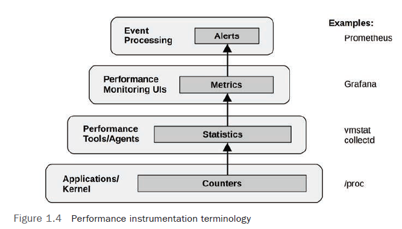

vmstat(8) utility prints a system-wide summary of virtual memory statistics and more, based on kernel counters in the /proc file system.The utilization, saturation, and errors (USE) method. It is a methodology that focuses on system resources and can be summarized as:
For every resource, check utilization, saturation, and errors.
| component | type | metric |
|---|---|---|
| CPU | utilization | system-wide: vmstat 1, "us" + "sy" + "st"; sar -u, sum fields except "%idle" and "%iowait"; dstat -c, sum fields except "idl" and "wai"; per-cpu: mpstat -P ALL 1, sum fields except "%idle" and "%iowait"; sar -P ALL, same as mpstat; per-process: top, "%CPU";htop, "CPU%"; ps -o pcpu; pidstat 1, "%CPU"; per-kernel-thread: top/htop ("K" to toggle), where VIRT == 0 (heuristic). |
| CPU | saturation | system-wide: vmstat 1, "r" > CPU count ; sar -q, "runq-sz" > CPU count; dstat -p, "run" > CPU count; per-process: /proc/PID/schedstat 2nd field (sched_info.run_delay); perf sched latency (shows "Average" and "Maximum" delay per-schedule); dynamic tracing, eg, SystemTap schedtimes.stp "queued(us)" [3] |
| CPU | errors | perf (LPE, Linux Performance Events, aka perf_events, from perf tool) if processor specific error events (CPC) are available; |
| Memory capacity | utilization | system-wide:free -m, "Mem:" (main memory), "Swap:" (virtual memory); vmstat 1, "free" (main memory), "swap" (virtual memory); sar -r, "%memused"; dstat -m, "free"; slabtop -s c for kmem slab usage; per-process: top/htop, "RES" (resident main memory), "VIRT" (virtual memory), "Mem" for system-wide summary |
| Memory capacity | saturation | system-wide: vmstat 1, "si"/"so" (swapping); sar -B, "pgscank" + "pgscand" (scanning); sar -W; per-process: /proc/PID/stat, 10th field (min_flt) for minor-fault rate dynamic tracing [5]; OOM killer: `dmesg |
| Memory capacity | errors | dmesg for physical failures; dynamic tracing, eg, SystemTap uprobes for failed malloc()s |
| Network Interfaces | utilization | sar -n DEV 1, "rxKB/s"/max "txKB/s"/max; ip -s link, RX/TX tput / max bandwidth; /proc/net/dev, "bytes" RX/TX tput/max; nicstat "%Util" [6] |
| Network Interfaces | saturation | ifconfig, "overruns", "dropped"; netstat -s, "segments retransmited";sar -n EDEV, *drop and *fifo metrics; /proc/net/dev, RX/TX "drop"; nicstat "Sat" [6];dynamic tracing for other TCP/IP stack queueing [7] |
| Network Interfaces | rrors | ifconfig, "errors", "dropped"; netstat -i, "RX-ERR"/"TX-ERR"; ip -s link, "errors"; sar -n EDEV, "rxerr/s" "txerr/s"; /proc/net/dev, "errs", "drop";extra counters may be under /sys/class/net/...; dynamic tracing of driver function returns |
| Storage device I/O | utilization | system-wide: iostat -xz 1, "%util"; sar -d, "%util"; per-process: iotop;pidstat -d; /proc/PID/sched "se.statistics.iowait_sum" |
| Storage device I/O | saturation | iostat -xnz 1, "avgqu-sz" > 1, or high "await"; sar -d same; LPE block probes for queue length/latency; dynamic/static tracing of I/O subsystem (incl. LPE block probes) |
| Storage device I/O | errors | /sys/devices/.../ioerr_cnt; smartctl; dynamic/static tracing of I/O subsystem response codes [8] |
| Storage capacity | utilization | swap:swapon -s; free; /proc/meminfo "SwapFree"/"SwapTotal"; file systems: "df -h" |
| Storage capacity | saturation | not sure this one makes sense - once it's full, ENOSPC |
| Storage capacity | errors | strace for ENOSPC; dynamic tracing for ENOSPC; /var/log/messages errs, depending on FS |
/proc/sysTracepoints are a Linux kernel event source based on static instrumentation. Tracepoints are hard-coded instrumentation points placed at logical locations in kernel code.
Available tracepoints can be listed using the perf list command.
# the following command traces the block:block_rq_issue tracepoint and prints events live:
$ perf trace -e block:block_rq_issue
# trace block I/O issue events only when the size (bytes argument) is larger than 65536
# The --filter argument for perf trace was added in Linux 5.5.
$ perf trace -e block:block_rq_issue --filter 'bytes > 65536'
Each tracepoint has a format string that contains event arguments: extra context about the event. The structure of this format string can be seen in a “format” file under /sys/kernel/debug/tracing/events. For example:
$ cat /sys/kernel/debug/tracing/events/block/block_rq_issue/format
Overhead
When tracepoints are activated, they add a small amount of CPU overhead to each event. The tracing tool may also add CPU overhead to post-process events, plus file system overheads to record them.
event rates of less than 10,000 per second cost negligible overhead, and only over 100,000 does the overhead begin to become measurable.
the minimum tracepoint overhead to be 96 nanoseconds of CPU time.
A disabled tracepoint becomes a small number of instructions: for x86_64 it is a 5-byte no-operation (nop) instruction. There is also a tracepoint handler added to the end of the function, which increases its text size a little.
kprobes (short for kernel probes) is a Linux kernel event source for tracers based on dynamic instrumentation. kprobes can trace any kernel function or instruction. They are considered an unstable API because they expose raw kernel functions and arguments that may change between kernel versions.
kprobes are important because they are a last-resort source of virtually unlimited information about kernel behavior in production.
| Detail | kprobes | Tracepoints |
|---|---|---|
| Type | Dynamic | Static |
| Rough Number of Events | 50,000+ | 1,000+ |
| Kernel Maintenance | None | Required |
| Disabled Overhead | None | Tiny (NOPs + metadata) |
| Stable API | No | Yes |
Overhead
For a particular system I measured the minimum kprobe CPU cost to be 76 nanoseconds, and the minimum kretprobe CPU cost to be 212 nanoseconds [Gregg 19].
performance monitoring counters (PMCs), also known as, CPU performance counters (CPCs), performance instrumentation counters (PICs), or performance monitoring unit events (PMU events), they all refer to the same thing: programmable hardware registers on the processor that provide low-level performance information at the CPU cycle level.
They typically include counters for the following:
On Linux PMCs are accessed via the perf_event_open(2) syscall and are consumed by tools including perf(1).
PMCs can be used in different modes:
stat subcommandrecord subcommand.CPU Priority inversion
Priority inversion occurs when a lower-priority thread holds a resource and blocks a higher priority thread from running.
This can be solved using a priority inheritance scheme. Linux since 2.6.18 has provided a user-level mutex that supports priority inheritance
Here is an example of how this can work:
For multiprocessor architectures, processors are connected using either a shared system bus or a dedicated interconnect. Modern servers are typically multiprocessor, NUMA, and use a CPU interconnect instead.
Example interconnects include Intel’s Quick Path Interconnect (QPI, being replaced by UPI), Intel’s Ultra Path Interconnect (UPI), AMD’s HyperTransport (HT), ARM’s CoreLink Interconnects (there are three different types), and IBM’s Coherent Accelerator Processor Interface (CAPI).
vmstat
vmstat 1
vmstat -Sm 1 # output units as megabytes using the -S option
vmstat -a 1 # -a option to print a breakdown of inactive and active memory
sar
sar -B 1 # Paging statistics
# pgscank column: page scanned by kswapd daemon per second.
# pgscand column: effectively shows the rate at which an application is blocking on memory allocations and entering direct reclaim (higher is bad).
# %vmeff column: a measure of page reclaim efficiency. High means pages are successfully stolen from the inactive list (healthy); low means the system is struggling.
sar -H 1 # Huge pages statistics
sar -r [ALL] 1 # Memory utilization, ALL flag to print more stats.
sar -S 1 # Swap space statistics
sar -W 1 # Swapping statistics
numastat - show memory usage on NUMA system, per CPU socket. It can show system-wide and per-process.
numastat # show memory allocation on node
# numa_hit: Memory allocations on the intended NUMA node.
# numa_miss + numa_foreign: Memory allocations not on the preferred NUMA node. (numa_miss shows local allocations that should have been elsewhere, and numa_foreign shows remote allocations that should have been local.)
# other_node: Memory allocations on this node while the process was running elsewhere.
numastat -m # -m print output in the style of /proc/meminfo
numastat -mp PID # -p print per-process info
swapon(1) can show whether swap devices have been configured and how much of their volume is in use.
$ swapon
NAME TYPE SIZE USED PRIO
/dev/dm-2 partition 980M 611.6M -2
/swap1 file 30G 10.9M -3
/proc/meminfo
$ cat /proc/meminfo | grep -i swap
SwapCached: 0KB
SwapTotal: 9764860KB
SwapFree: 9764860KB
Check active swap usage using vmstat 1
swpd column: Amount of swapped-out memorysi column: Memory swapped in (paging)so column: Memory swapped out (paging)